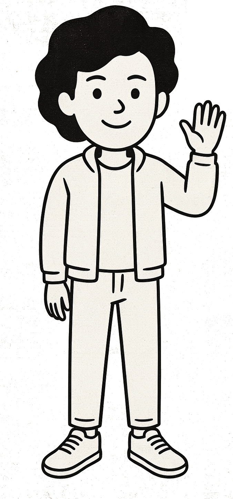

Why the next five years belong to the fastest learners — not the most experienced.

✦Keep it up if it did something you couldn't have done yourself a year ago.
I do not think I have typed a line of code since December.
When AI fails you, it's a skill issue — not a capability ceiling. The ceiling on your output is now your skill. And skill is learnable.
Learning velocity beats accumulated experience. You're no longer the worker — you're the manager of agents, and the moat is how well you direct them.
Directing agents well — precise, composable, verifiable instructions — is programming. Don't waste the advantage.
Execution is being automated. Judgment, taste, and knowing what's worth building are what's left — and what's rare.
One person + agents is becoming a full productive team. Solo ownership, end-to-end, is the new org design.
Frontier AI costs $100–200 a month. Adoption tracks GDP per capita — most of India is priced out of the leverage.
We're a trust-deficit society. Agent adoption won't follow the Silicon Valley playbook here — trust is built in person.
Taught by practitioners doing the work — to boost your career.
To continuously upskill — because the loop never stops.
People six months ahead of you, helping you grow.
Curated resources and exercises — signal, not noise.
Nobody re-skills alone. Before you leave tonight: introduce yourself to two people you haven't met. That's the whole assignment.